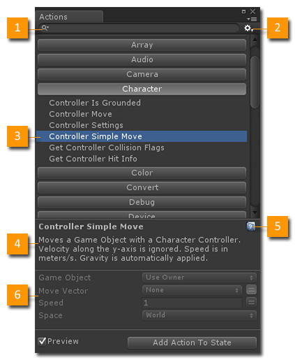
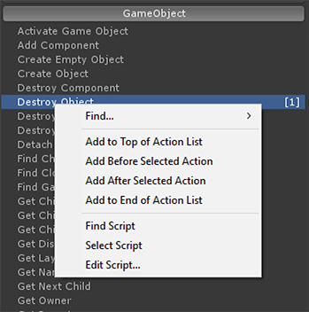
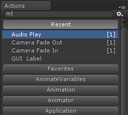

Open the Action Browser from the Playmaker Main Menu or State Inspector.
The Action Browser shows all available Actions sorted by category:

- Search: Filters the Action List so you can find actions. Search popup lets you filter by Name or Description.
- Settings Menu: General settings. See below.
- Selected Action: Open a category then select an Action.
- Description: A description of the selected Action.
- Help: Opens an online doc for the selected Action.
- Preview: A preview of the UI for the selected Action. Toggle on/off with the Preview check box.
Settings Menu
- Show Preview: Toggle the Action Preview on/off
- Hide Obsolete Actions: Sometimes old actions are marked obsolete. Use this setting to show/hide these actions.
- Close Window After Adding Action: With this setting the Action Browser works more like a popup dialog.
- Auto Refresh Action Usage: In a large project this might slow down the editor.
- Disable Window When Playing: Disable this window when game is playing in the editor.
Context Menu

- Find...: Find where an an action is used.
- Add...: Various options to add the Action to the selected State.
- Find Script: Pings the Action's script file in the Project View.
- Select Script: Selects the Action's script.
- Edit Script...: Opens the Action's script in the default script editor.
Favorites (NEW 1.8.3)
- A special category that shows actions you've marked as Favorites.
- Add actions to Favorites using the Action Context Menu.

Recent (NEW 1.8.3)
- The Recent category shows actions recently added to states.
- Control the size of the list using the Settings Menu.

Tips
- Hit Ctrl ~ or double click the State Inspector to open this browser.
- Typing in the Search field selects the first matching action.
- Use Up/Down cursor keys to navigate the Action List.
- Hit Enter to add it to the selected State.
- You can drag and drop actions from the list into the State Inspector or the Graph View.

See Also: